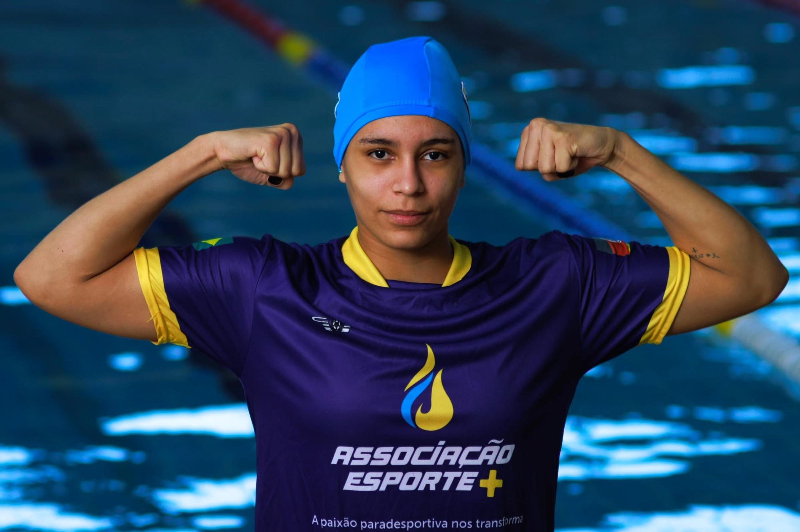
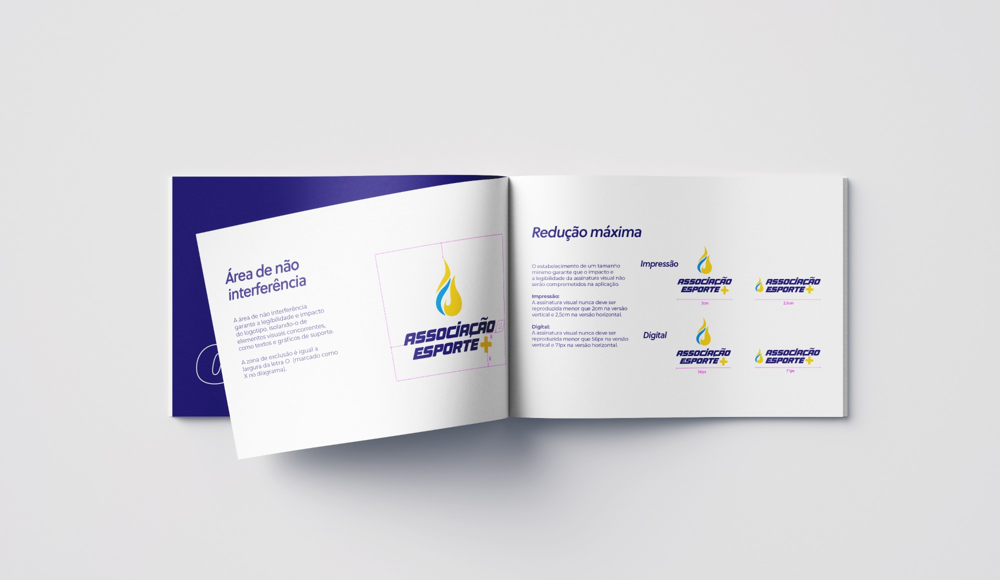
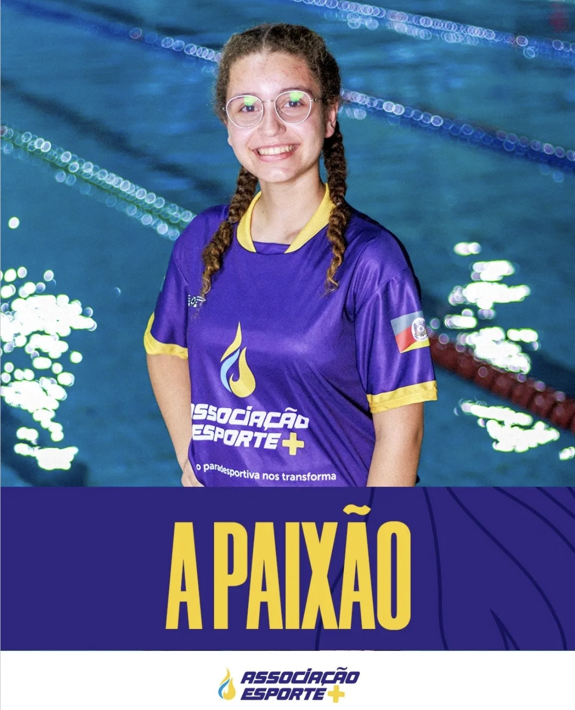
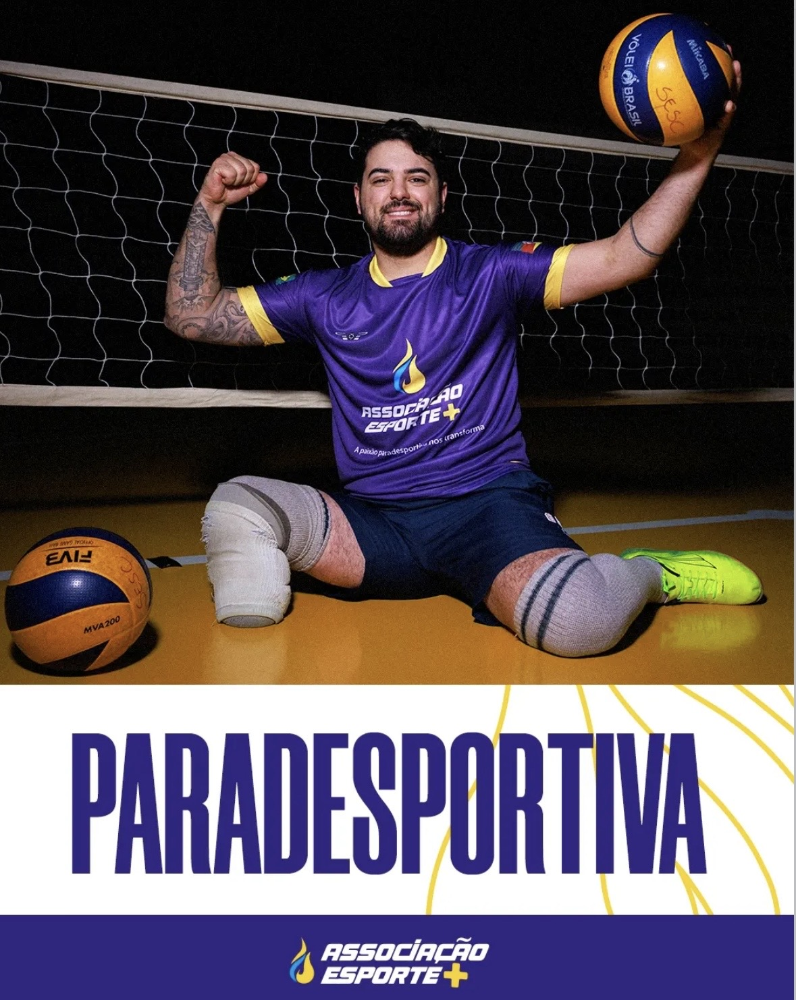
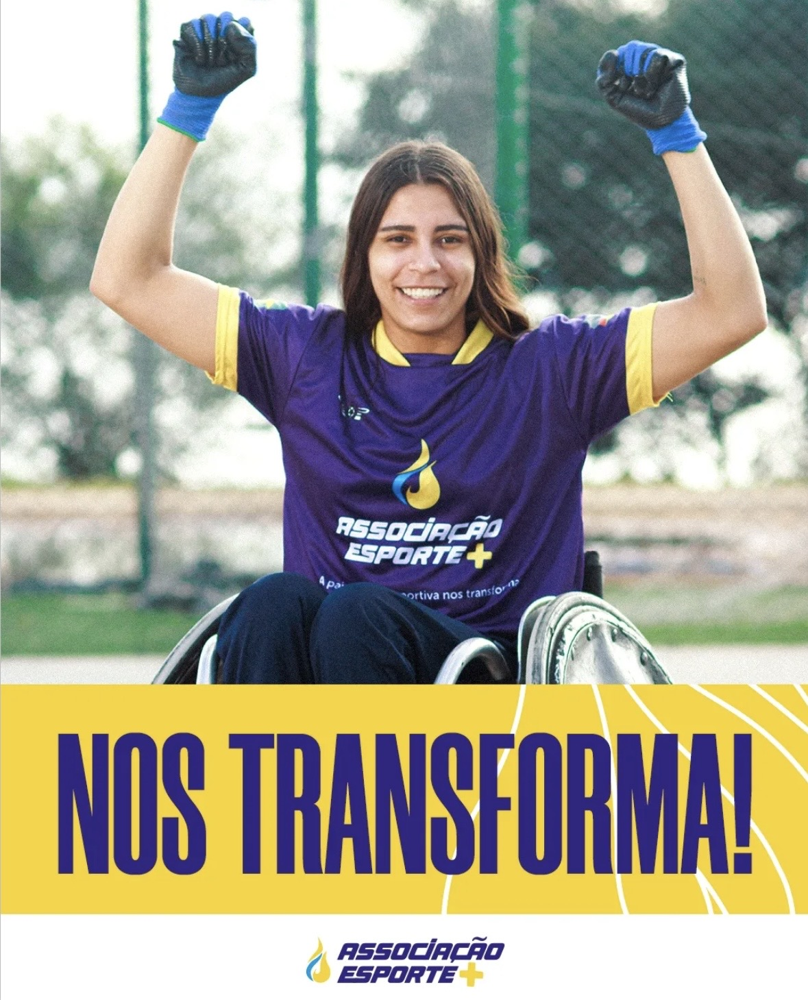
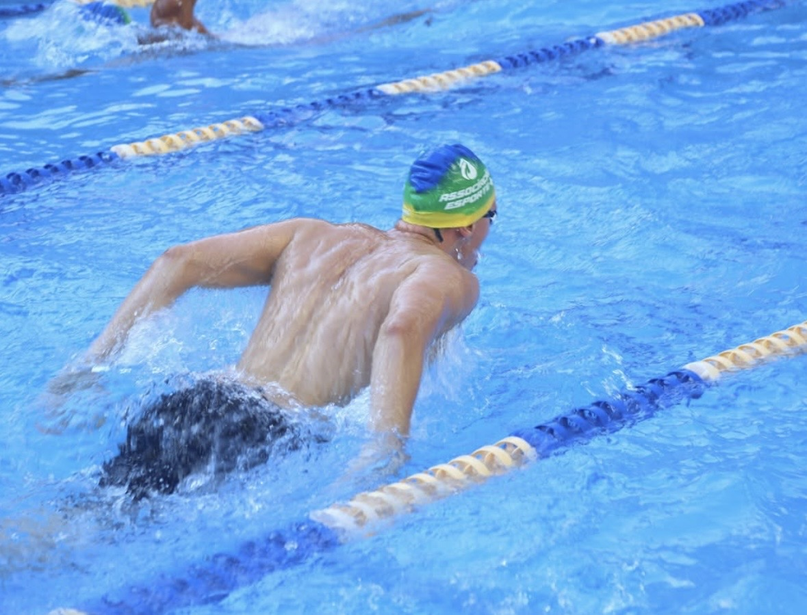

/ Brand Identity · Rebranding · 2024
A full visual identity for Associação Esporte+, a nonprofit using parasport to transform lives — rebranding

/ Context
Associação Esporte+ is a nonprofit founded in 2015 that provides quality of life through sport and inclusion — working directly with 70 athletes and reaching over 200 people indirectly, across paralympic swimming, wheelchair rugby, seated volleyball, and archery.
The rebrand came from a specific tension: the old logo read as representing a single sport — swimming — and carried a wheelchair symbol, when the Association is about something broader than any one sport or any one story of disability. It's about the passion that unites staff and athletes to transform lives.
I led the rebranding end-to-end: from the initial concept through to a complete visual identity manual (MIV) built in Illustrator, covering logo system, color, typography, and applied materials.
/ Rationale
The strategy started from the concept, not the visuals: research into the Association itself and into how its own athletes understood their world — including their "grito de guerra," the athletes' own rallying cry — fed directly into the insight behind the new concept: "a paixão paradesportiva nos transforma" — the passion for parasport transforms us.
The primary signature was built around that idea: the strength of that passion, represented by a flame rendered in the brand's colors. The wordmark's typography carries the same logic — an italic slant for movement, letters joined together for the union and dynamism of sport, and rounded curves for balance and warmth.
Color stayed close to the original palette — blue, yellow, and white — with only the blue intensified to a deeper, more confident tone: recognizable, but sharper.
/ Logo System
Rather than a single fixed image, the signature was documented as a full, ruled system — a defined minimum clear space, horizontal and vertical lockups in positive and negative, black & white and monochromatic versions, and minimum-size rules for both print and digital, so the mark stays legible at every scale and on every background.
The preferred version — flame + wordmark — used above all others whenever space allows.
A defined minimum non-interference area around the mark, protecting it from crowding by other elements.
Both orientations documented in positive and negative, for light and dark backgrounds alike.
Single-color versions for constrained print contexts — engraving, stamping, single-ink runs.
Print: never smaller than 2cm (vertical) / 2.5cm (horizontal). Digital: never smaller than 56px (vertical) / 71px (horizontal).
The mark paired with a divider and program name — Projetos de Formação, Projetos de Alto Rendimento, Educação e Inclusão — for the Association's internal sub-programs.

/ Color & Type
Two core colors carry the identity: a deep navy and a golden yellow, both specified across print and digital color spaces for consistent reproduction.
Typography follows the same logic as the mark itself: an italicized cut of the wordmark's typeface reinforces the sense of motion and constant cycles central to sport, while Museo Sans — in three weights (700, 500, and 300) — carries the rest of the manual, from headings down to body copy.
/ Applications
The identity was applied consistently across the organization's touchpoints, keeping the same visual language recognizable at every scale.




/ Delivery
Everything lived inside one Illustrator file, with artboards, layers, and groups structured by section — signature system, color and type specs, applied examples — each clearly labeled and grouped by family, so anyone opening the file could find their way around it.
Per the client's request, each piece was then exported individually — logo variants, color swatches, applied materials — and delivered through a shared Drive folder, rather than packaged as a reusable component library in Figma or Illustrator; that wasn't part of what this project asked for.
/ Closing
Since launch, the new identity has been carried across the Association's events and even into the city of Porto Alegre's own advertising for the cause — proof that a documented, rule-based system travels further than a one-off logo file ever could.